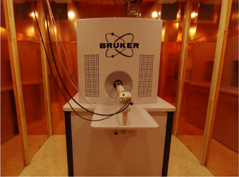

MPI Scanners
Here we describe the MPI scanners being used to acquire the MPI data
Bruker Preclinical MPI Scanner

The preclinical MPI scanner from Bruker has a 11.8 cm bore and is equipped with a fully 3D send/receive system and 3D focus fields allowing for flexible measurement sequencies. The system parameters are given below
| Parameter | Value |
|---|---|
| Scanner Bore Diameter | 11.8 mm |
| MaxDrive-Field Amplitude | 12 mT x 12 mT x 0 mT |
| Drive-Field Frequency | ??? x ??? x ??? |
| Max Selection-Field Gradient | -1.0 T/m x -1.0 T/m x 2.0 T/m |
| Repetition Time | ??? ms |